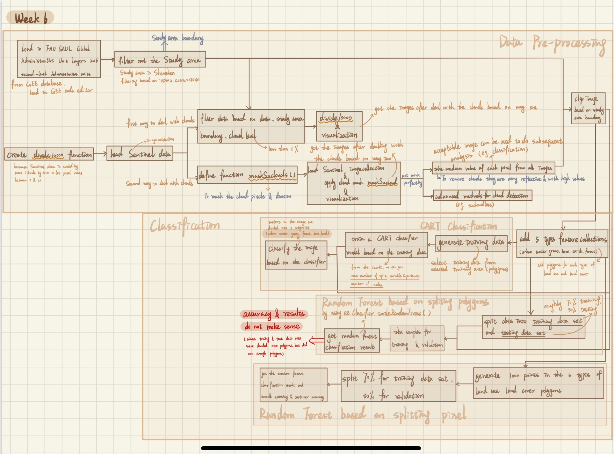
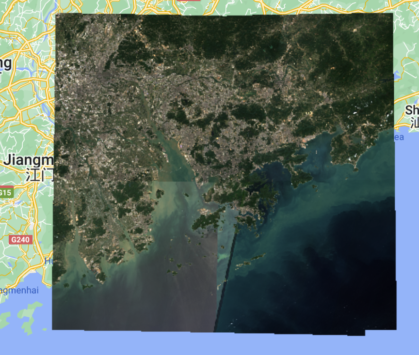
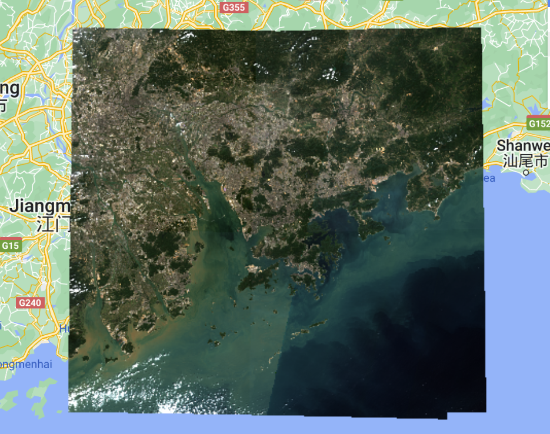
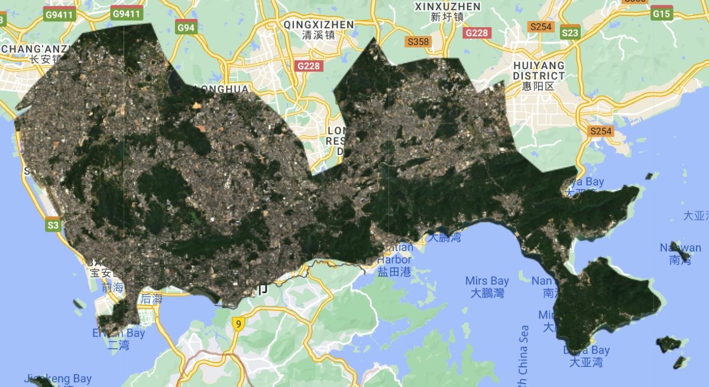
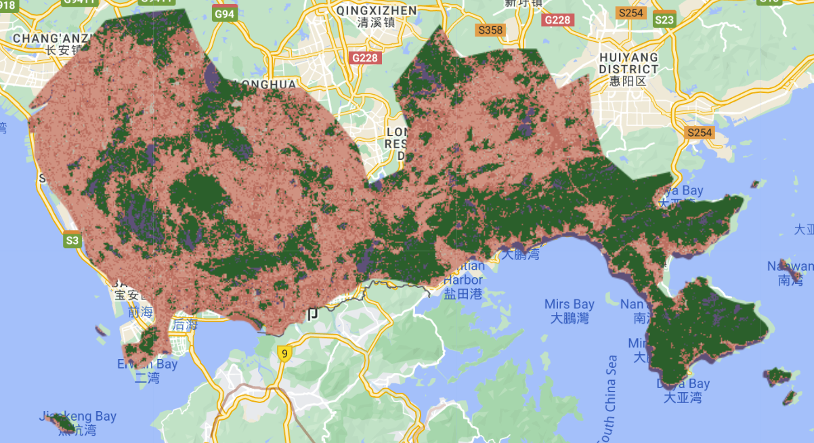
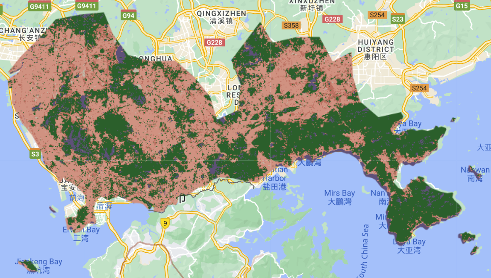
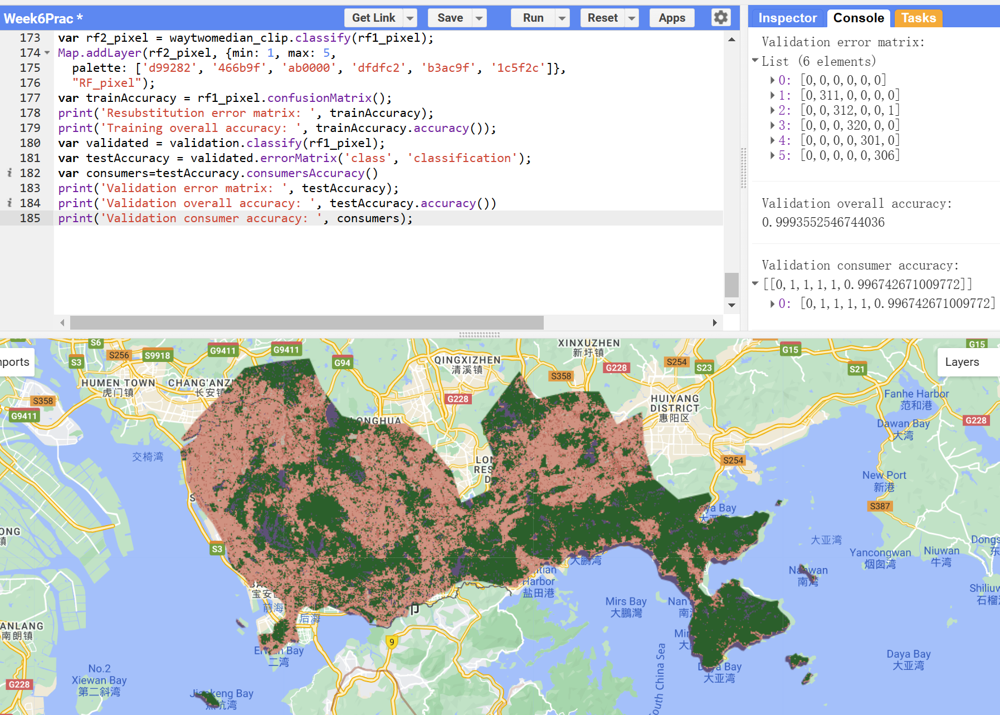

6 Week6 Classification
In this week, we focus on classification. We reviewed why we need to classify data in some research and how to use the classified data, and we learnt nature of several remote sensing classification methods. Based on the classification content that we learnt from lecture and relevant literature, I collect several applications based on different classification methods and compare the differences between them.
6.1 Summary
The summary part of learning diary in this week has been divided by three parts, including how the classified data has been used in the previous research and real life, summary of classification methods, and summary of practical.
6.1.1 Utilization of classified data
- Air pollution and land use and land cover
Imagery after classified can be used to monitor air pollution during a certain period. For example, based on Sentinel-3 imagery to collect and monitor sea and land surface temperature, and collect other data to analyze the potential factors affect the sea and land surface temperature. According to the classification results and relevant statistic graphs, it is clear to identify the changes of temperature between each time during the research period.
- Land use and land cover (urban green spaces)
Imagery collected by different sensors can be used for different procedures or analysis when analyzing issue related to urban green space. For example, we can choose medium spatial resolution imagery for decision making and modelling. Moreover, we can combine different sensors for urban garden mapping, counting urban trees, which will combine their strengths and optimize the results.
Monitoring deforestation and illegal logging
Forest fire hazard mapping
Expert systems is a system that answer the non-expert users’ queries based on the basic knowledge from an expert and give suitable advice back to the users. As machine learning, experts set training samples and test data to build a model for classification or prediction and give the classification or regression results back to users based on the data that users input.
Commonly, we use classification and regression trees (CART), random forest, and other machine learning methods to classify imagery. When creating a decision tree (classification tree), we need to set a root and few decisions to split data into two sets. This process is not random, we need to modify the model with the lowest Gini impurity for each splitting time.
For building regression trees, we set the root of th regression tree and divide data based on sum of squared residuals, which we hope the value of SSR is the lowest within a certain neighborhood. In addition, we need to split data into training and testing data for each validation to avoid overfitting. To avoid overfitting, we can calculate Tree Score:
Tree Score = SSR + tree penalty(alpha) * T(number of leaves)
Since we start with an ideal model, so that the start value of alpha is 0. Therefore, at the beginning, we will get the lowest tree score. Then, we need to divide data into training and testing data set several times (probably 10 times), build the model, and delete leaves to check whether the tree score and SSR change, until we get the lowest SSR expect for the tree score at the beginning, and return the corresponding alpha value to calculate tree score, and finish the modelling process.
- Gini impurity = 1 - (probability of true)2 - (probability of false)2
- The best sum of SSR value across all variables can be the root of regression tree
- 20 pixels (or other units) is often the minimum number of pixels in a leaf
- Decision tree are not great for predicting with new data
Random forests, growing many classification decision tree, might solve the disadvantage of decision tree. Since random forest can be considered as the combination of many decision trees, so that the process of make final decision based on random forest is bootstrapping the complete data set into many data set, and each one will be divided for training and testing. Build decision trees based on different training and testing data sets and aggregate the results of the ensemble of trees.
- Number of variables per tree is the square root of variables in the original data.
- There might be out of bag error, which caused by all trees that did not have the rows in the original data and average prediction error.
6.1.2 Remote sensing data classification methods
Image classification is to turn pixels into different pre-defined categorical classes. There are two general types of classification based on pixels, including unsupervised classification, supervised classification. In this week’s lecture, we mentioned several types of supervised classification, including CART classification, random forest classification, and SVM, all of which are used to classify remote sensing images by first training some samples based on some features and then predicting the remaining pixels. This type of classification methods is currently very popular in the field of remote sensing because of its high accuracy rate. In the practical part, we try to implement CART decision tree and random forest in GEE for land cover classification in Shenzhen, China.
6.1.3 Summary of practical
This week’s practical is mainly used to familiarize with the common remote sensing data classification methods in GEE. The main workflow of practical in this week shows in the following Figure 1. Our main project in this week includes Sentinel data pre-processing and classification based on the study area of Shenzhen, China.

After loading Sentinel-2 imagery and the Shenzhen boundary polygon, we found that there are clouds that cover the objects in several images that we collected based on the location, sensor, collecting period. Therefore, we have two methods to solve this question. One method is filter data again, based n the cloud level to filter images satisfy the condition of low cloud level, which means that the cloudy pixel percentages of each image should be lower than 1%. Figure 2 shows the result of dealing with clouds based on the first method. In Figure 2, the clouds are barely visible as an obstruction to the image.

The other method is to mask the cloudy pixels and do division to decrease the impact of clouds on the subsequent processes and analyses. However, based on the imagery collected in this project, the second method did not work well. The clouds can still be seen clearly in Figure 3 below.

To avoid the influence of clouds on the subsequent classification, I chose to take median value of each pixel from all images that I collected as the image which will be used to do classification later. The relevant code shows in the following code chunk:
var way_two_median = waytwo.reduce(ee.Reducer.median());
var vis_params = {
bands: ['B4_median', 'B3_median', 'B2_median'],
min: 0.0,
max: 0.3,
};
Map.addLayer(way_two_median, vis_params, 'True Color (432)');After clip the image based on the boundary of Shenzhen, I got the acceptable image without cloud issue within the boundary of Shenzhen, China (Figure 4). Then, we can move to do classification.

There are three different classification methods used in this practical, including CART classification decision tree (Figure 5), random forest based on splitting polygons (Figure 6), and random forest based on splitting pixels (Figure 7). I create several polygons for 5 types of land use and land cover for training the models, including urban, water, grass, forest, and bare earth. The type of land use represented by the different colors can be distinguished according to the inspector. Light pink is urban, purple is water, light green is bare earth, dark pink is grass, and dark green is forest. The same color represents the same type of feature in all three classifications. Code used in GEE for do classification based on CART shows in the code chunk:
var classifier = ee.Classifier.smileCart().train({
features: training,
classProperty: classProperty,
}); //build CART classifier based on the selected polygons and classes
print('CART, explained', classifier.explain());
var classified = waytwomedian_clip.classify(classifier); //apply the classifer
Map.centerObject(shenzhen);
Map.addLayer(classified, {min: 1, max: 5, palette: ['d99282', '466b9f', 'ab0000', 'dfdfc2', 'b3ac9f', '1c5f2c']}, "classified"); // output classification resultMoreover, after comparing with the original image, I found that the result of this CART classification is not very accurate, for example, some parts of the water area with greenish color is classified as grass type. But the division between forest and urban is relatively accurate.

Based on the visual comparison of the original remote sensing images and the classification results in Figure 6, although no valid accuracy was obtained, it can be seen that the classification results by using random forest based on splitting polygons are relatively more accurate compared to the CART classification results. The lack of valid accuracy may be due to the fact that training and testing data sets were divided into polygons, so that there are not enough polygons.

The difference between two random forest classification methods used in this practical is when I did random forest classification based on splitting pixels, it is needed to transform polygons that I created into pixels with corresponding class:
var pixel_number= 1000;
var urban_points=ee.FeatureCollection.randomPoints(urban, pixel_number).map(function(i){
return i.set({'class': 1})})
var water_points=ee.FeatureCollection.randomPoints(water, pixel_number).map(function(i){
return i.set({'class': 2})})
var grass_points=ee.FeatureCollection.randomPoints(grass, pixel_number).map(function(i){
return i.set({'class': 3})})
var bare_earth_points=ee.FeatureCollection.randomPoints(bare_earth, pixel_number).map(function(i){
return i.set({'class': 4})})
var forest_points=ee.FeatureCollection.randomPoints(forest, pixel_number).map(function(i){
return i.set({'class': 5})})From Figure 7 below, we can visualize the validation error matrix, validation overall accuracy, and validation customer accuracy, and the accuracy of the latter two is very high, indicating that the model built based on splitting-pixel random forest is very accurate in classification.

Therefore, based on the above three classification results, it may be more appropriate for this practical to use random forest based on splitting pixels to classify the acquired Sentinel-2 images in the range of Shenzhen.
- The proportion of training and testing data set might be different from DS course?
- Will data leakage happen when doing CART classification by using training data to generate classifier to classify the whole image?
- Why we need QA and why we set “qa60”?
6.2 Application
Classification of remote sensing images is vital in many studies which need satellite image information (Dhingra and Kumar 2019; Zhang et al. 2021), and with the continuous development of technology, there are more and more methods of classification, enabling more accurate classification results of remote sensing images applicable to different situations. Based on the classification methods covered in this week’s lecture and practical, I have found relevant literature to add to the application of those classification methods. In addition, I also add several applications of other classification methods that are currently more common. Since the choice of classification method will largely affect the performance of the classification (Zhang et al. 2021), it is important to understand and be familiar with the characteristics of different classification methods and the applicable scenarios.
- Applications of CART classification
Li et al. (2023) used, NDVI, EVI, NDWI, NDMRI, and the radar back scattering coefficient to train the samples and build a CART decision tree to classify the acquired Gaofen satellite images for land cover in Xinjiang, China, and obtained a high accuracy. Although, I think this method can get relatively high accurate land cover classification results, in order to ensure high accuracy, the CART decision tree that the authors established requires very detailed conditions. Therefore, the robustness and universal applicability are relatively low, and this CART decision tree almost cannot directly used for land cover classification in the Gaofen image in different time of the same area.
- Applications of random forest classification
Supervised classification based on random forest can avoid overfitting and also be more robust (Zhang et al. 2021).
Pelletier et al. (2016) used random forest and SVM classification methods to classify the land use classes in based on SPOT-4 and Landsat 8 imagery and compare the results and accuracy. They divided the land use types in the study area into 18 categories, such as wheat, sunflower, etc., and compared the ability of different classification methods to identify different types of features by calculating user’s accuracy, producer’s accuracy, and F-Score (Pelletier et al. 2016). In this study, the researchers are trying to determine whether random forest-based classification is feasible for a large study area by comparing the accuracy of random forest classification to that of the more traditional SVM classification method.
The comparison method they chose to determine whether random forest classification is feasible may be rather one-sided, and one can try to select several different types of study areas to try random forest classification and compare the accuracy. Moreover, in this study, the authors chose a predetermined land use type that is more plant-oriented, and the selected categories should be appropriately adjusted to compare the ability of this classification method to discriminate between different types of features.
In addition, (Zhang et al. 2021) classified the land cover types in Beijing based on Sentinel-2 images and random forest with Bayesian Optimization, which is also worth to study and think about.
- Applications of other classification methods
Supervised classification classify the images based on the training samples that users selected, which means that users need to define number of classes and create representative features of each class in advance (Dhingra and Kumar 2019). Supervised classification is used to provide land use and land cover classes (Dhingra and Kumar 2019). The common methods are maximum likelihood classification, less distance classification, Support Vector Machine (SVM) (Dhingra and Kumar 2019).
In addition, unsupervised classification is to classify the images into different categories based on different spectra and requires the user to merge the classified results into the desired categories (Dhingra and Kumar 2019). The most obvious difference between unsupervised classification and supervised classification is that the former does not require the selection of a training sample (Dhingra and Kumar 2019).
Object-based classification is also useful in remote sensing studies, which will elaborate in next week.
6.3 Reflection
This week I learned several supervised classification methods that I had not been exposed to in my undergraduate studies, including CART, random forest classification, and SVM, and implemented a preliminary implementation of land cover classification in GEE using the above methods. I also learned about several more optimal classification methods based on random forest classifier by reading the literature. I think it is very useful and interesting to learn and apply different classification methods. The usefulness lies in the fact that similar methods can be used in future research to improve the accuracy of the classification, not only to review the relevant content in the data science course, but also to understand the essential principles of these classification methods. The interesting part is that different classification methods will give different classification results, and even though the principles are similar, the classification results will be quite different.
I think several remote sensing image classification methods that I learned and understand during this week will be very useful for my future research. For example, if I want to study the change of land use types in London to determine whether there are illegal buildings privately occupying public areas, I need to compare the change of land use types in the same area before and after a period of time, but there are high requirements for the resolution of the images and the accuracy of the classification. Although I may adjust my random forest classifier for image classification according to the actual research problem and the characteristics of the study area to make the accuracy of image classification higher, the essence is still based on random forest-like method for image classification.